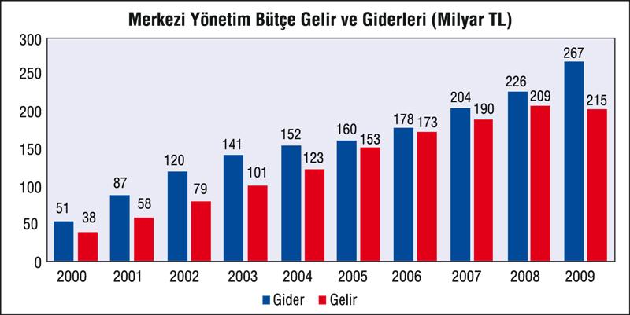

Küresel kriz, kamu maliyesi performansını önemli ölçüde olumsuz yönde etkiledi, bütçe tarihi açıklar verdi. Yüzde 4,7'yi bulan negatif büyümeye ve reel sektörü desteklemeye yönelik yapılan indirimlere bağlı olarak vergi gelirleri bütçe tahminlerinin önemli ölçüde altında kaldı. Özelleştirme gelirleri ise hedeflenen düzeyin altında kaldı. Diğer yandan harcamalar, 2009 yerel seçimlerinin de etkisiyle büyümeden bağımsız bir şekilde, bütçede öngörülen düzeyde gerçekleşti. Ayrıca, krizin etkilerini azaltmak amacıyla bazı harcama kalemlerinde ilave artışlar yapıldı. Ekonomik aktivitedeki daralma sonucu sosyal güvenlik sisteminin prim tahsilatı hedeflerin altında kaldı ve sosyal güvenlik sisteminin açığında belirgin bir artış yaşandı. Sonuçta, ortaya çıkan büyük açığın yükü, vergi yükü ağırlaştırılarak, daha az harcama yapılarak alt-orta sınıfa yıkılmak istendi, yanı sıra artan açıklar kamunun iç ve dış borç faizinde önemli artışlarla sonuçlandı. Böylece, bütçe üstünden eşitsizlikler, azaltılmak bir yana, daha da derinleştirildi.

Küresel kriz kamu maliyesi performansını olumsuz yönde etkiledi. Ekonominin küçülmesi ve iç talebi canlandırmaya yönelik olarak yapılan vergi indirimlerine bağlı olarak vergi gelirleri bütçe tahminlerinin önemli ölçüde altında kaldı. Özelleştirme gelirleri de hedeflenen düzeye ulaşamadı.
Ayrıca, krizin etkilerini azaltmak amacıyla bazı harcama kalemlerinde ek artışlar gerçekleştirildi. Ekonomik küçülme sosyal güvenlik sisteminin prim tahsilâtının hedeflerin altında kalmasına ve sosyal güvenlik sisteminin açığında belirgin bir artış yaşanmasına yol açtı.
2009 yılında merkezi yönetim bütçe harcamalarının yüzde 18, 3 oranında artmasına karşılık gelirlerde 2,9 oranında bir azalma yaşandı.
2001 krizinden sonra bütçe açığında başlayan azalma eğilimi 2006 yılında durdu. 2007 yılından itibaren artmaya başlayan bütçe açığı 2008 yılında 17 milyar TL'ye ulaştı. 10,4 milyar TL açık hedefiyle başlanan 2009 yılında ise bütçe açığı 52,2 milyar liraya kadar yükseldi.
Bütçenin 2010 yılında 50 milyar, 2011 yılında 45 milyar, 2012 yılında ise 39 milyar lira açık vereceği öngörülüyor.
| BÜTÇE AÇIKLARI | Milyon TL |
| 2002 | -40.090 |
| 2003 | -40.204 |
| 2004 | -30.300 |
| 2005 | -8.116 |
| 2006 | -4.642 |
| 2007 | -13.707 |
| 2008 | -17.069 |
| 2009 | -52.215 |